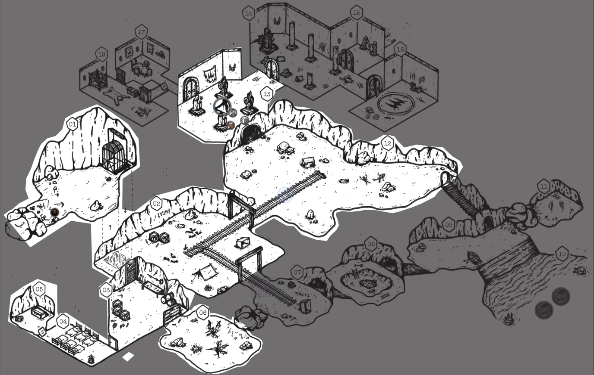

Episode 47 of BREAK!!: The Wandering Trio? Already? Ya damn right because I wrote Ep. 46 late in the week cycle. When I said last week was light in terms of lore, this week put me in my place improv-wise. It is one thing to use a module intended as a light one-shot as a one-shot, but quite another to incorporate it into your campaign without any prep. So, we got homework for next week for a satisfying conclusion of this place. Regardless, here’s the scoop.
Previous report here. Adventure Site taken from my adaptation of They Dug Too Deep, available within my one-shot book The Helical Expeditions! Self-plug…but hey, it’s free!
Here was the last explored state of the map, and where we pick up from today:

Tussle with the Creature
We ended with a sick introduction and layered audio effect of the Creature dropping from the ceiling, the ichor-y silhouette of a young child attached to its weird Fleshwarped, shadow-y form. Music and the creepy child whispering sfx set the tone perfectly and the Players were spooked.
By this point, however, a solo monster is always going to get dunked on by this Party. The Creature only got one hit off before Abra Shadow Puppeted it turn-after-turn and that was that. No complaints here, though, they were amused by said dunking and interacted with the environment well. Abra demanded it impale itself on the Amethyst Statues in the room and I took the opportunity to make the weapons of the statues the Bright-Aligned Concealed Weapons that were originally in Room 16. Merrily noting this, Gack broke one off and tried to use it, failing.
Lookus did his usual Murder Princess slaughtering and got the final blow on it. My “no complaints here” were further justified because on the Creature’s defeat, the person who killed it takes on the Champion’s Berserker condition. There was a cool scene description where the melting shadows of the Creature mixed with Lookus’ Blade of Darkness and took control, causing him to lash out and attack the Party. They parried (otherwise taking a hefty hit) then managed to Negotiate him out of it. Fun RP ensued.
Their 1 Turn’s worth of Actions were identifying the Bright-aligned weapons, peeping into Room 14 to note its ruined state, and nabbing the other statues’ amethyst which I ruled some as a variant of Sun Gold called Sun Amethyst (how original). Seeing the destruction prompted them to instead explore Room 17 first.
And here is where the lore started flowing and did not stop. Seeing the skeletal corpses in Calian robes within the dining room, Lookus crit on an Insight Check to figure out their whole schtick. With this, I got to give the rundown of the place a fair bit. Brief notes since it is within the one-shot above anyways:
- This was the hideaway and experimentation site of a powerful Calian Fleshwarper, who abandoned the Empire.
- They were influential enough to drag some other powerful Fleshwarpers as acolytes? underlings? hard to tell.
- The underlings were poisoned in an act of betrayal, though for an unknown purpose. Sweet, lethargic poison.
- One can identify experienced Fleshwarpers from others based on how warped their physical form is. The very act of Fleshwarping, especially as you push its boundaries, exacts a toll on the Mage. These skeletons had all manner of unevenly warped, twisted bones - from fingers to skull structure. I was quite pleased with this description.
Pushing on into Room 18 was where the flood gates opened, however.
The Bloodstone Staff
Room 18 is the lavish bedchambers and personal study of the Leader, containing all manner of research notes, weird medical instruments, and stale materials. The most notable things in the room, however, were the shriveled up husk of a Swamp Goblin - mid reaching for the wicked-looking Bloodstone Staff - and the imprint of a disintegrated figure on the ground, only their robes and rather fashionable glasses left physically. The Players were amused and confused how this one Swamp Gobbo got so far in when all the others were wiped out in the first room. No clue either, man.
Abra took the slick shades off the ground and discovered they were magical, giving him some redundant darkvision on account of being a Gobbo. Gack - who can smell the presence of Mana - noted the powerful Flesh Mana emanating off the staff at the same time that Lookus crit failed investigating its danger level and decided to casually pick it up. Abra quipped at that with “ah great just go messing with obviously cursed magic items before letting the Sage investigate it, surely nothing wrong will happen.”
- Magical glasses that prevents the wearer from suffering the Obscured Condition caused by non-magical sources.
This is the bit where I messed up the flow and needlessly put some work on myself. The staff was hyped up quite a bit as dangerous and so I wanted to lean into that. Instead of doing anything simple like a trap or another possession check, I instinctly decided to give it a voice that spoke in Lookus’ head upon pickup. It spoke innocently and cordially, asking to be let free of the staff, but couldn’t offer up information on itself as it “couldn’t remember”. Abra and Gack, naturally, were immediately over the possession bullshit of the area and started yelling at Lookus to put it down.
It started whispering paranoid thoughts and doubt and, on a failed Grit Check, Lookus fed into them, backing away into the corner defensively. Sick of this, Abra tried to invoke his Sapphire to turn Lookus into water and shift him away from the staff but failed a Contest against its will - clever stuff, though. This set everyone on rather high alert since the Sapphire is a legendary artifact.
While the others continue to yell at Lookus, I interwove the staff continuing its paranoid thoughts. It all culminated to Lookus slamming the staff like Gandalf to cease the racket for a moment to think. By Physical Intimidating (Negotation) the staff with a threat to simply smash the bloodstone and done with it, the staff acquiesced and simply requested to be “put down so it could try influencing the next bozo that picks it up”.
I say I messed up the flow here primarily because the whole discussion and negotiation stuff stalled a bit without clear direction. For context, Lookus failed the initial Grit Check then failed the first Negotiation (which I didn’t mention) attempt before pushing luck and succeeding on the second. It’s not that there was dead air or pauses but just that it was a bit clunky and could’ve used more stakes/pressure/something to sharpen the scene. Overall, though, I think it went ok!
The Players were quite relieved that they dodged a “two possessions in one day” scenario. Here’s the staff:
Crimson Rite:
- As an Action, you can expend 1 Heart during Combat to summon a Crimson Demon.
- This Crimson Demon takes the stats of a Custrel.
- It has 10 Defense Rating and 1 Heart.
- All of its stats are 7.
- Its speed is Average.
- It dual-wields Standard Weapons as claws.
- The Crimson Demon lasts the duration of the Fight or until it reaches 0 Hearts.
- You may only use this once every 24 Hours.
After things settled down, they decided to use the Inspect Location Action to dive into the research notes in the chamber for information on this staff. Though no one could read the Dark Tongue they were written in, Abra managed to decipher the sketches of the ritual used in its creation. It required the sacrifice of some close friends (yep, saw that) and is meant to bind their souls as eternal servants within the staff’s bloodstone. If done properly, the soul can be summoned as a blood custrel to fight for the wielder.
Abra intuited that the ritual must’ve gone slightly awry since the soul in the staff isn’t supposed to have a will of its own post-ritual nor attempt possession of the wielder. Indeed, it is a Cursed Sage’s Staff. Despite all this knowledge, Abra the gremlin immediately picked up the staff and Reasonably Debated (Negotiation) with it that they should have a conversation regarding a mutually beneficial relationship later, on account of Abra’s deep familiarity with possessed creatures. Abra doing this sparked Lookus to snark about “hypocrisy in touching cursed items” before Abra clapped back with “well not all of us are predisposed to possession”. A perfectly apt episode title dunking on Lookus, hell yeah.
With their Inspect Action complete, a Creature Encounter roll was rolled and rolled it was. So, during their bickering, once again the whispering sounds kicked up (to much dismay) and, from the imprint on the ground, rose the Creature menancingly! We ended there where we’ll pick up with combat. Hey, maybe it’ll get two whole Actions in this time.
Here is where they ended:

Conclusion
Good session overall but now I got a bunch of homework to get done before the next session! The list:
- What the heck is this staff’s whole deal? Now I gotta give it a personality, some goal once outside the staff, the whole works since Abra is very much intrigued. So much for a simple loot item.
- Where’s Sprick’s Star Gem at? My gut tells me to put it in Room 11. Two of the mining crew stole it off Spruck when the Creature appeared but got trapped in that room, their spirits bound to the Star Gem for the time being.
- Where the heck are the Rings of Fleshwarp? This one I got no clue yet. We’ve got the ritual room, the Bloody Tome, and the Creature to deal with. But here’s a first pass:
- The party needs a way out (…since they collapsed the entry elevator) so an interesting place to put the Rings might be on an underling who stole them and tried to escape when the Creature went berserk.
- There is a secret entrance/exit in Room 15 where you’re supposed to figure out that blood opens it. To make the exit obvious, I might have the bottom half of a skeleton on the inside and the top half past the closed door.
- The way the Rings work is that it isn’t a disappear/reappear Teleportation. Rather, it (uncomfortably) unwinds your body into a single thread of pure Flesh Mana and stitches you back together at the target location.
- Seeing they wouldn’t make it through the closing door, the underling attempted to short range warp through it. It’ll, uh, be a nice warning indicator to the Players what happens if that thread gets interrupted.
To end: Abra’s Player brought up that all this Calian Fleshwarping non-sense and exposure to Abra is prime material for an eventual post-campaign Pedagogue/Master Villain arc for him, especially if his father/mentor Taam doesn’t make it. Curious to see what Abra does with the Bloody Tome and what Gack + Lookus’ reactions are.
As always, I appreciate you reading!
Comments